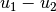

Compute  and
and  norms¶
norms¶
The file getfem/getfem_assembling.h defines the functions to compute
and norms of a solution. The following functions compute
the different norms:
getfem::asm_L2_norm(mim, mf, U, region = mesh_region::all_convexes());
getfem::asm_H1_semi_norm(mim, mf, U, region = mesh_region::all_convexes());
getfem::asm_H1_norm(mim, mf, U, region = mesh_region::all_convexes());
where mim is a getfem::mesh_im used for the integration, mf is a getfem::mesh_fem and describes the finite element method on which the solution is defined, U is the vector of values of the solution on each degree of freedom of mf and region is an optional parameter which specify the mesh region on which the norm is computed. The size of U should be mf.nb_dof().
In order to compare two solutions, it is often simpler and faster to use the following function than to interpolate one mesh_fem on another:
getfem::asm_L2_dist(mim, mf1, U1, mf2, U2, region = mesh_region::all_convexes());
getfem::asm_H1_dist(mim, mf1, U1, mf2, U2, region = mesh_region::all_convexes());
These functions return the and norms of .

前のトピックへ
Interpolation of a finite element method on non-matching meshes
次のトピックへ
Download
Main documentations
- GetFEM++ User documentation
- Python Interface
- Matlab Interface
- Scilab Interface
- Gmm++
- GetFEM++ project